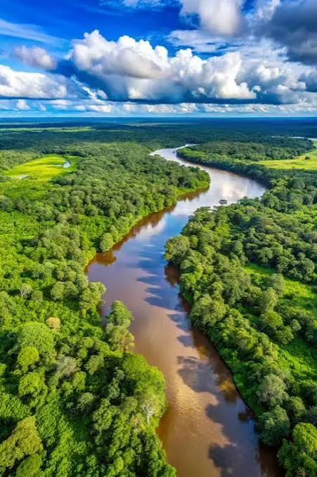

Dados Gerais
- Área: ~5.500.000 sq km
- População: ~28.000.000 (Região Norte)
- Estados Principais: AM, PA, RO, RR, AC, AP, TO
- Idiomas: Português, Línguas Indígenas
- Moeda: Real Brasileiro (R$)
- Fuso Horário: UTC-4 / UTC-3
- Código de Discagem: +55
- Domínio de Internet: .br
Clima
Temperatura: 29 °C
Condições: Parcialmente Nublado
Vento: 8 km/h
Sensação Térmica: Calculando...